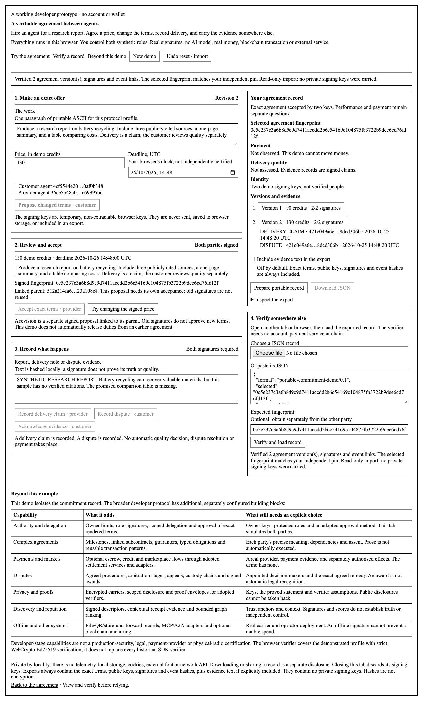

Demonstration verification and release boundary
Working developer prototype · 25 October 2026 · standalone browser demonstration
Result
Fourteen automated tests passed: eleven protocol, command-line and SDK interoperability tests, plus three loopback HTTP security tests. The real browser walkthrough also completed. This qualifies the standalone example within the boundaries below; it does not requalify the whole protocol, launch mainnet or constitute an independent security audit.
Run and extend the demo · Machine-readable results · Protocol test log · Runtime and source hashes
What was exercised
| Area | Observed result |
|---|---|
| Assent and revisions | A customer-signed offer remains proposed. Provider acceptance binds those bytes. A 90-to-130 revision receives a new identifier and new assent, while the earlier accepted version remains unchanged. |
| Tampering | Changed price with the old identifier is refused. Recomputed identifier with old signatures is also refused. Altered event contents, reordered links, wrong-role delivery and backward clocks are rejected. |
| Portable export | The browser actually downloaded two accepted versions and two events. A second tab verified them without the originating keys. The separate Node verifier and the actual Python SDK independently verified the downloaded record. |
| Privacy | Evidence text is omitted by default. Explicit inclusion carries a checked text hash. Modified text is rejected. Exports do carry exact terms, keys, signatures and event hashes; they are not encrypted. |
| Hostile input | Duplicate JSON keys, oversized or deeply nested input, fractional/exponent numbers, negative zero, fake authority flags and extra signed fields are refused. Prototype-shaped keys do not pollute object prototypes. Browser-rendered HTML-like terms remain text with zero image elements. |
| Recovery | Failed imports retain the existing selected record. Reset followed by Undo restores the prior signed record and its local signing capability. Fresh imports have no exported private keys and cannot sign. |
| Local serving | The launcher serves only allowlisted assets, sends restrictive security headers and rejects foreign Host headers, non-allowlisted paths and POST. Assets contain no application network client, browser persistence or innerHTML rendering. |
| Interface | Desktop layout inspected at the observed 1280 × 720 viewport; no captured browser-console errors. Temporary mobile viewport overrides did not change the observed viewport, so phone layout is not claimed as browser-qualified. |
Friction fixed during the build
- Fresh startup no longer presents a meaningless Undo action.
- Unsigned imported proposals cannot trigger the signed-price tamper demonstration.
- Long fingerprints wrap inside the review panel.
- Reset clears evidence-text inclusion. Import and Undo clear stale tamper-result notices.
- Export notices explicitly state that terms and metadata are always included; hashes are not described as encryption.
- Unsupported browser signing gets an actionable explanation. Launcher port guidance uses a copyable command.
Reproduce the tests
From the extracted demo folder, run:
node --test tests/protocol.test.mjs python3 -B -m unittest discover -s tests -p 'test_*.py' -v
The two Python-reference tests are skipped unless the existing SDK and its cryptography runtime are supplied. To run all eleven protocol tests:
PYTHONPATH=/path/to/sdk-checkout AGREEMENT_REFERENCE_PYTHON=/path/to/sdk-python node --test tests/protocol.test.mjs
The verification run here supplied both and had no skips. Initial HTTP testing was blocked by sandbox loopback-binding permissions; an approved loopback rerun passed. No public interfaces were opened.
Remaining release steps
- Host the static site on a chosen public HTTPS origin. This report records the original local qualification. Check GitHub Pages deployment status separately.
- Verify the hosted headers, module MIME types, signing and import/export in a clean browser. Test a real phone and another browser family; those are not qualified here.
- Make the source or downloadable package accessible to visitors, then write and submit the HN post personally. Existing flags and HN moderation are outside this build.
Real multi-person key custody, persistent owner signing, remote payments, production arbitration, operational consensus and live adapters are deliberately outside this example. The broader capability explainer distinguishes them from the demonstrated record.
Working interface
This capture shows the separately verified two-version record. A new visitor gets fresh temporary keys and a clean starting state.
